The two pictured homes are replaced by the approved bait shop and marina entrance. A connected access street fronts the store; the broad timber deck joins the waterfront and original piers. Furniture is grouped at the edges, mooring fittings and pilings sit outboard, and fishermen leave the narrow center lanes free.
2,344 sampled positions across the wider walking bands have zero fixed obstruction hits. Actual keyboard movement passes all four pier centers and returns, crosses the full promenade and gateway, follows the new street and enters/exits the relocated shop. Mobile pointer input passes. Native district datasets and Zombie behavior remain unchanged.
Play the local layout · Gameplay results · Clearance sweep · Protected mode check · Performance · Protected source hashes
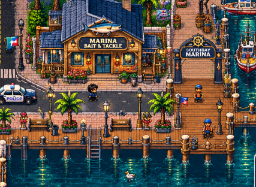
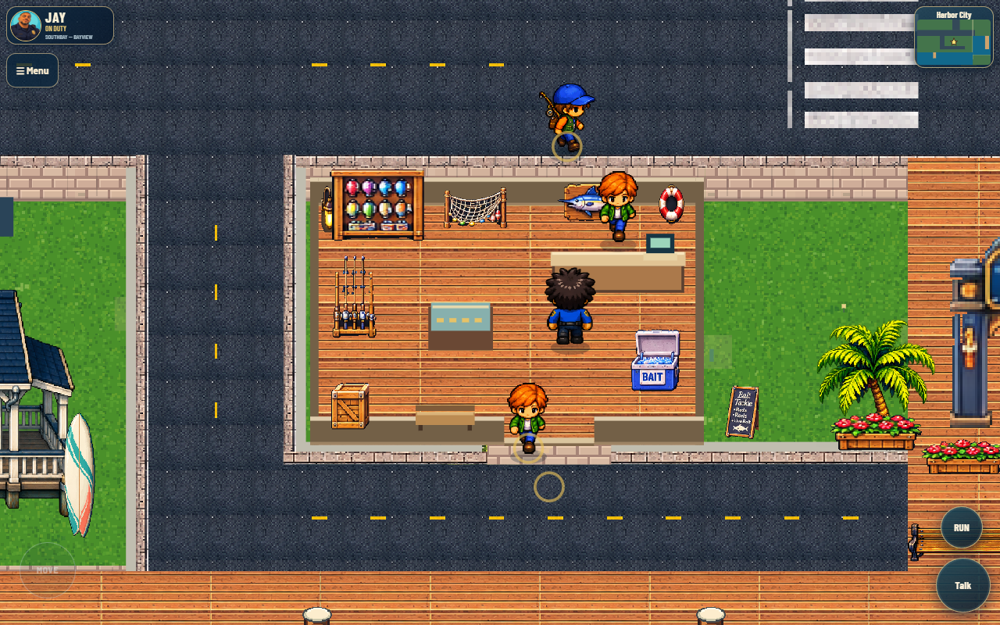
Headless Chrome, matching camera/zoom, no recording. Emulated viewport measurements; physical-device testing remains outstanding.
| Build | Viewport | FPS |
|---|---|---|
| before | 1280×800 | 38.9 |
| updated | 1280×800 | 35.8 |
| before | 390×844 | 60 |
| updated | 390×844 | 60 |
| before | 844×390 | 58 |
| updated | 844×390 | 55.9 |
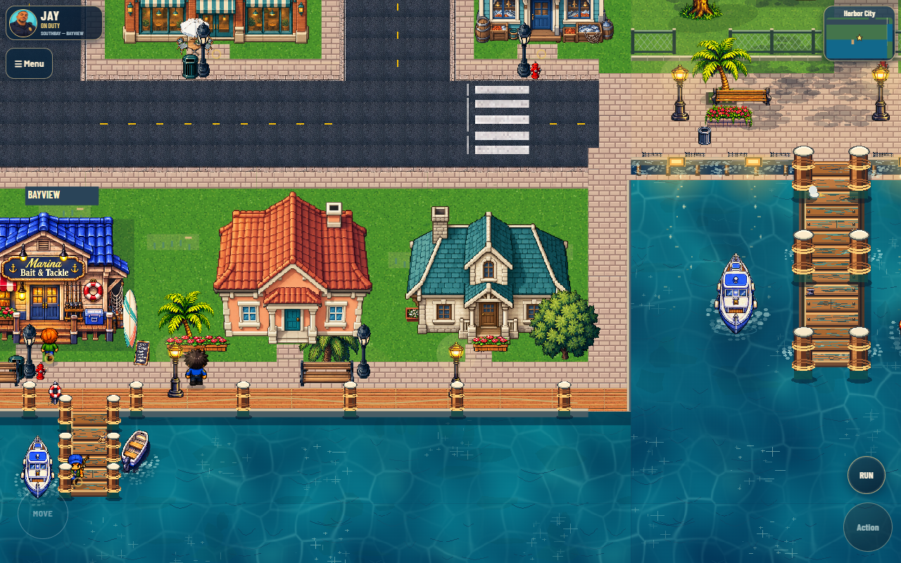
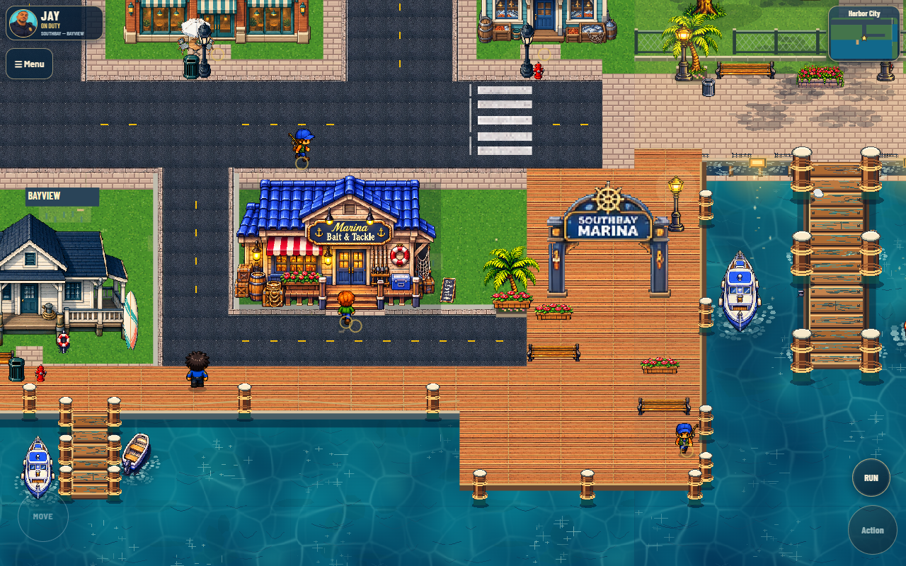
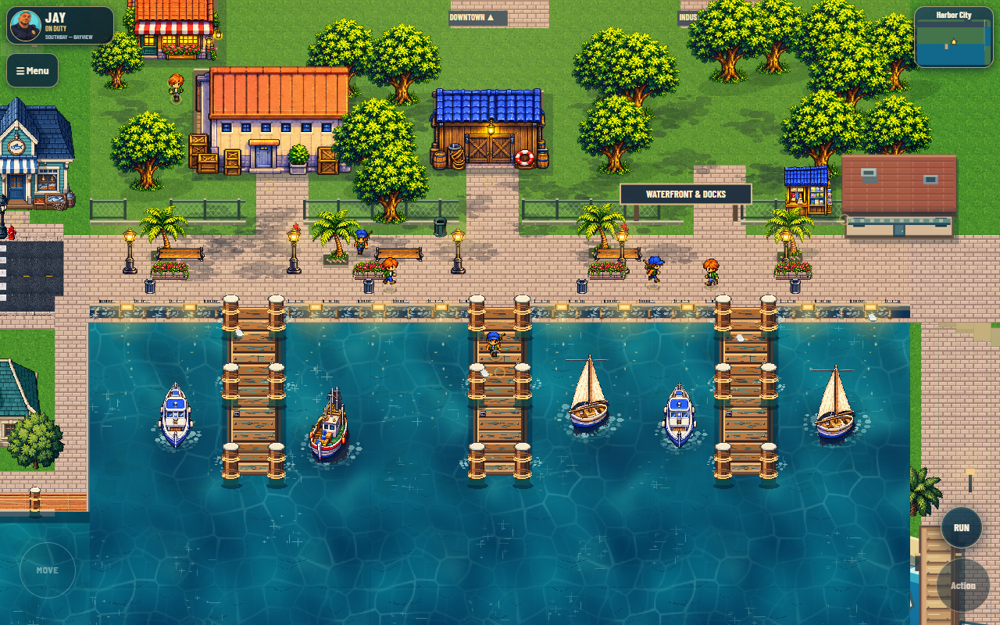
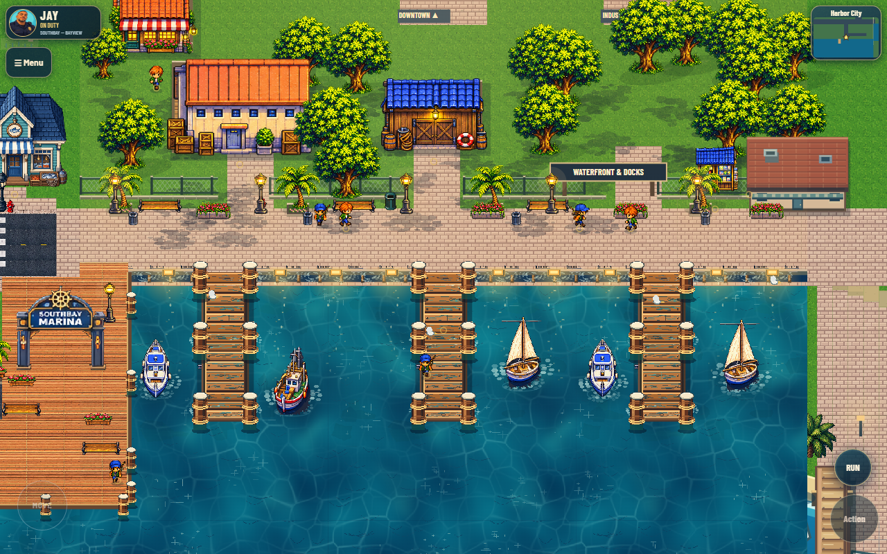
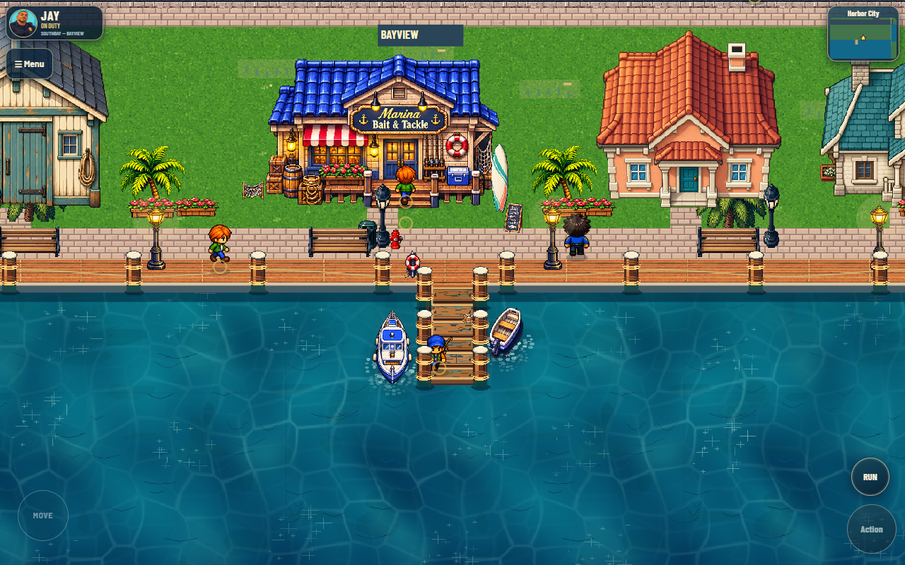
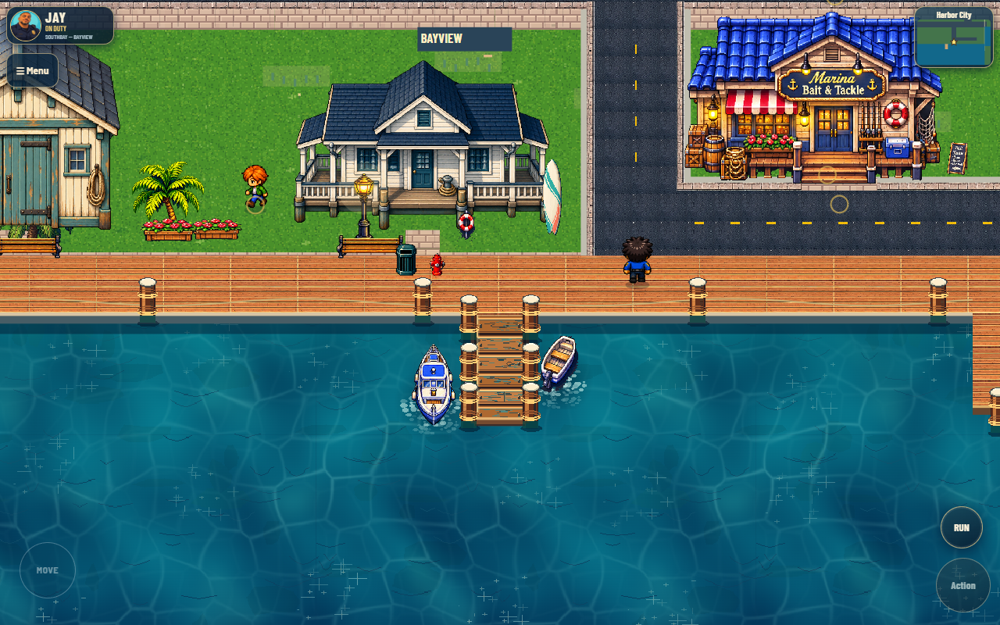
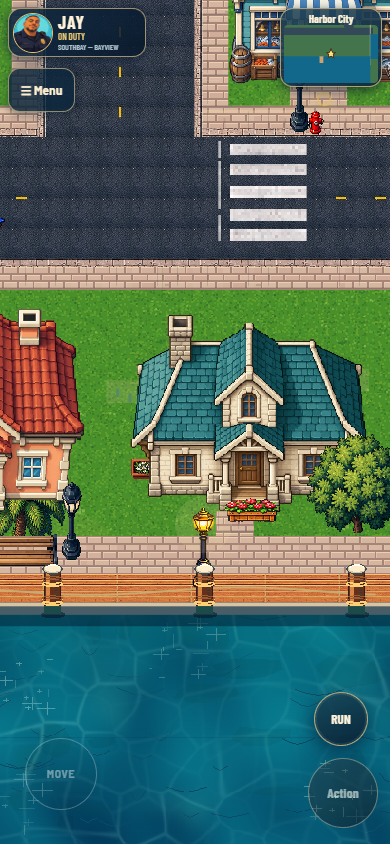
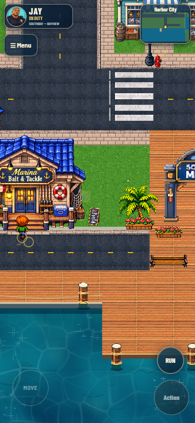
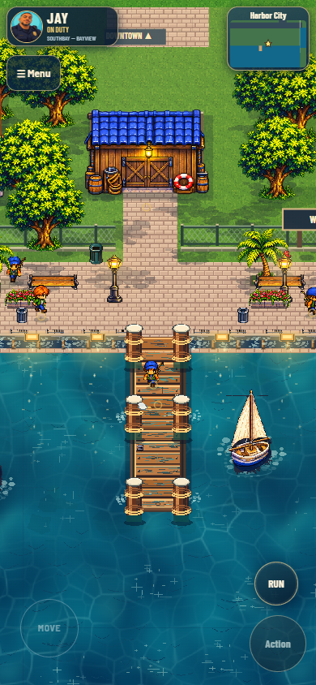
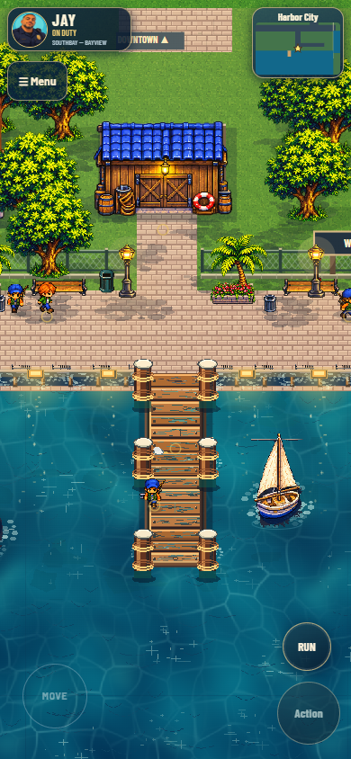
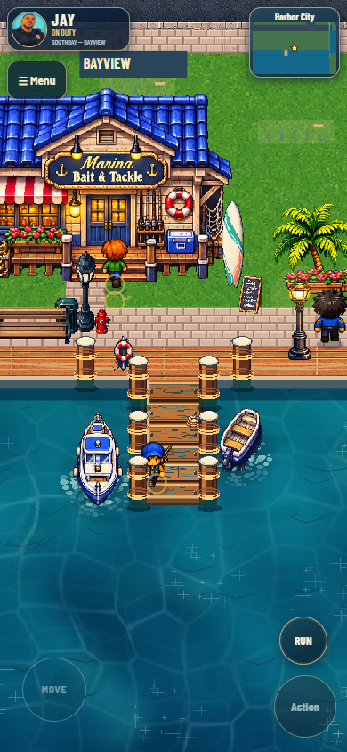
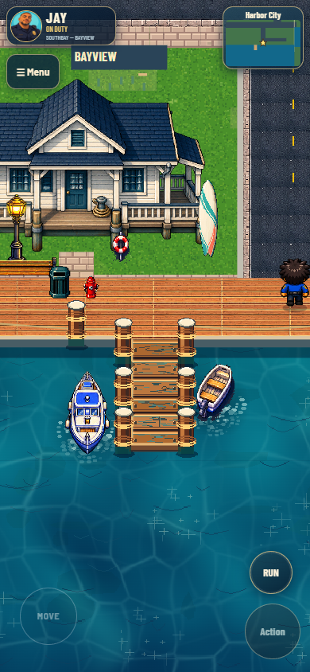